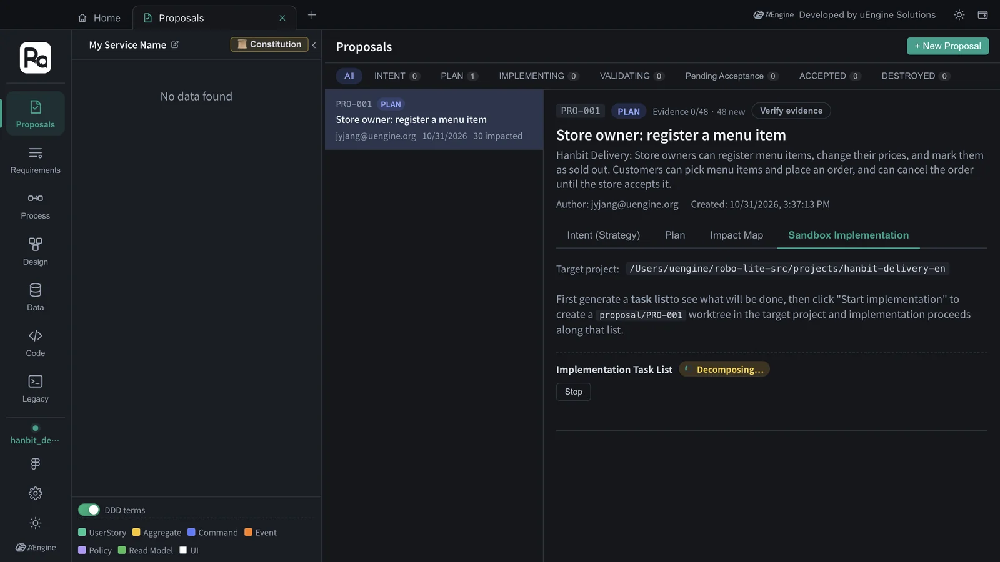
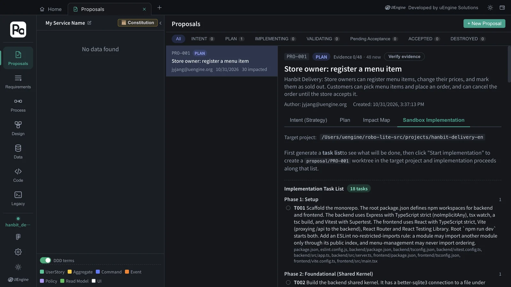
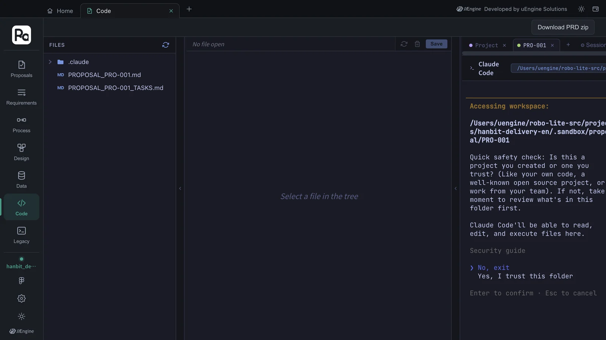
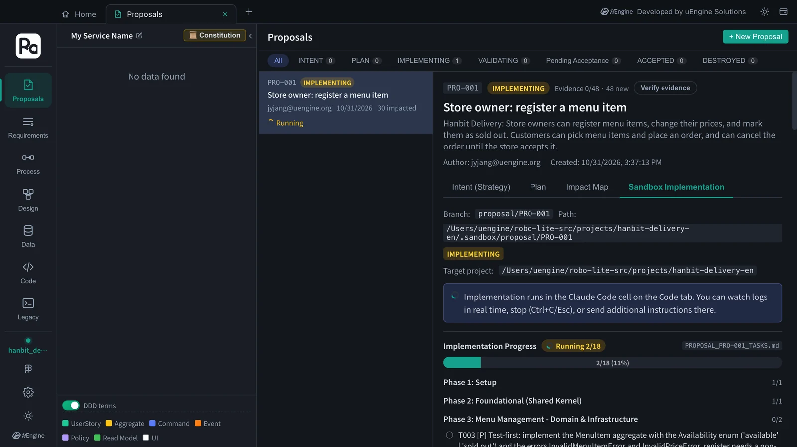
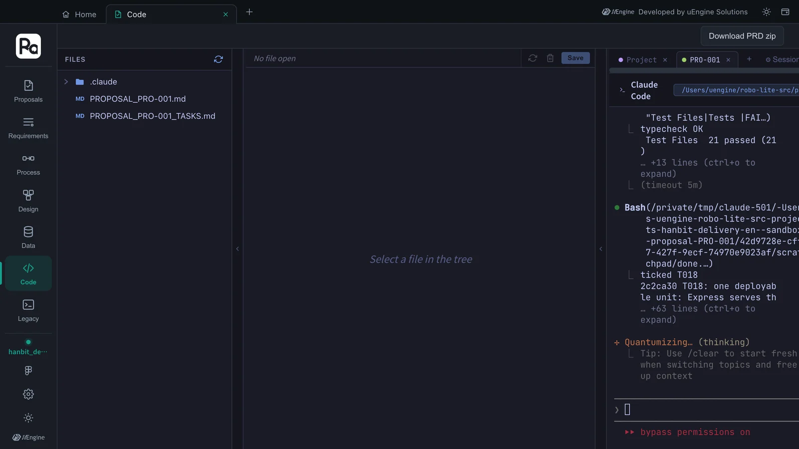
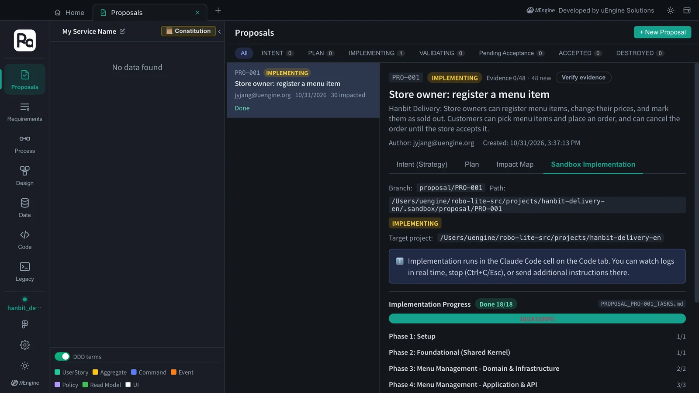

Split the confirmed plan into a task list, and the Claude Code cell in the Code tab implements that list item by item with
/robo-implement. The work happens not on the main branch but in a worktree (the sandbox) on theproposal/PRO-001branch, with a commit for each finished task. In this tutorial, 18 tasks took about 35 minutes.
What happens#
- Task list — the
robo-proposal-tasksskill turns the plan (Chapter 5) into a checklist by phase. Each task lists the file paths it will create. - Sandbox — a git worktree is created at
.sandbox/proposal/PRO-001inside the target project folder, and the work happens on theproposal/PRO-001branch. The main code stays as it is until acceptance (Chapter 7). - Claude Code cell — in the terminal on the right of the Code tab, Claude Code on your PC runs
/robo-implement PRO-001. Each time it finishes a task, it ticks the checkbox inPROPOSAL_PRO-001_TASKS.mdand commits. - Progress — the proposal's Sandbox Implementation section reads those checkboxes and shows a progress bar and per-phase counts.
Hands-on 1 — Generate the task list#
- In
PRO-001, whose plan you confirmed, open the Sandbox Implementation section. Check that the target project is the code folder you chose on Home (…/projects/hanbit-delivery-en). - Click Generate task list. Claude Code reads the plan and writes tasks by phase. In this tutorial it took about 4 minutes. If it stops with “Failed to parse the task breakdown”, Claude's answer couldn't be read as a task list — click it again (this time it worked on the first try).
- Implementation Task List · 18 tasks appears. Each task has a description and the files it will create. If you don't like it, click Regenerate task list.


This task list had eight phases.
| Phase | Tasks | What |
|---|---|---|
| 1 Setup | T001 | npm-workspaces monorepo (Express · TypeScript backend, React · Vite frontend), an ESLint rule that a module imports another only through its public index |
| 2 Foundational (Shared Kernel) | T002 | SQLite connection and migration runner, BEGIN IMMEDIATE transactions, an event dispatcher that runs after commit, DomainError → HTTP mapping, a development stub for the acting user (the AUTHENTICATION gap stays open) |
| 3 Menu Management - Domain & Infrastructure | T003–T004 | MenuItem aggregate (test-first), menu_items migration and repository |
| 4 Menu Management - Application & API | T005–T007 | the four menu commands with owner checks, the StoreMenu query and the published MenuCatalogQuery port (OrderableMenuItems), menu routes |
| 5 Ordering - Domain & Infrastructure | T008–T010 | OrderDraft and Order aggregates (test-first), ordering tables and repositories |
| 6 Ordering - Application & API | T011–T014 | picking items, PlaceOrder, AcceptOrder · CancelOrder, the IncomingOrders · MyOrderStatus queries, ordering routes |
| 7 Frontend | T015–T016 | menu screens (store menu, owner menu management), ordering screens (order review, order status, incoming orders) |
| 8 Test & Polish | T017–T018 | process-level API tests and module-boundary tests, packaging as one deployable unit (Dockerfile) |
You can see the decisions of the Chapter 5 plan turned directly into tasks — for example, T011 says each handler “calls MenuCatalogQuery through the menu-management public index” for the item's store, current price and availability, and T010 adds “no foreign keys to menu_ tables” (constitution principle I, Bounded Contexts as Modules). T017 then adds an architecture test that Ordering SQL never references menu_ tables.
Hands-on 2 — Start implementing#
- Click Start implementation. The app creates the worktree and the
proposal/PRO-001branch. If the target folder isn't a Git repository, it asks whether to rungit initand continue. - Click Go to Claude Code cell. The Code tab opens with a PRO-001 cell on the right.
- The first time, Claude Code asks two things. Click the cell, choose with the arrow keys and press Enter.
① Folder trust — “Yes, I trust this folder” (the default is “No, exit”, so be sure to move down to it)
② Bypass permissions mode consent — “Yes, I accept” (so that file writes and commands during implementation aren't confirmed one by one) - Once you've answered both, the app types
/robo-implement PRO-001into the cell and implementation starts. While a prompt is on screen, the app doesn't send the command and waits.

Both prompts appear only the first time
Folder trust and bypass-permissions consent are Claude Code's own safety checks, so Robo Architect doesn't answer them for you. Once answered they're remembered, and you won't be asked again for the same folder on the same PC. Bypassing permissions suits an implementation cell that works only inside the sandbox worktree — the main code doesn't change until acceptance.
Hands-on 3 — Watch the progress#
In the cell you can watch Claude Code read and write files, run npm install and tests, and git commit. Go back to the Proposals tab to see the progress bar.

- Progress bar · per-phase counts — updated each time the cell ticks a checkbox in
PROPOSAL_PRO-001_TASKS.md. Finished tasks are struck through, and phases that are done fold up to their count. - “Stalled — no update for Nm” — appears when the checkboxes haven't changed for a while. Open the cell and see what Claude is waiting for (a question, an error).
- Stop · further instructions — stop with Ctrl+C or Esc in the cell, then type further instructions.
- Mark remaining done — if the run ended with some tasks left over, this moves on to validation with what has been done so far. To have Claude finish the rest instead, give it further instructions in the cell.

In this tutorial, all 18 tasks were done about 35 minutes after answering the prompts.

Result — what was created#
The proposal/PRO-001 branch got one commit per task, 18 in all (T001: scaffold npm-workspaces monorepo … … T018: one deployable unit …). Excluding the lock file, that's 125 files and 9,290 lines.
backend/src/modules/menu-management/ MenuItem aggregate · commands · StoreMenu query · MenuCatalogQuery port · routes
backend/src/modules/ordering/ OrderDraft · Order aggregates · commands · queries · routes
backend/src/shared/ SQLite · transactions · events · HTTP errors · dev actor stub
backend/migrations/ 0001 menu_items · 0002 ordering tables
backend/tests/ process-level API tests · module-boundary tests · acceptance traceability
frontend/src/features/menu/ store menu · owner menu management · register form · change price dialog
frontend/src/features/ordering/ order review · order status · incoming orders
Dockerfile one deployable unit (Node.js LTS slim, SQLite file on a volume)
This code exists only in the sandbox for now. It is merged into the main branch only after it is validated and accepted (Chapter 7).
What to check#
- The task list is shown by phase, with file paths on each task.
- In the cell, you answered “Yes” to folder trust and bypass permissions the first time, and
/robo-implement PRO-001then started by itself. - The progress bar reached 18/18, and the
proposal/PRO-001branch has a commit per task.
Quiz#
- Does the main code (the default branch of
hanbit-delivery-en) change during implementation? - The cell is stuck at “Is this a project you created or one you trust?”. What do you do?
- The progress bar shows “Stalled”. What do you look at first?
Answers
- No. Implementation happens on the
proposal/PRO-001branch in the.sandbox/proposal/PRO-001worktree, and it is merged into the main branch on acceptance (Dual Merge). - Click the cell, select “Yes, I trust this folder” with the arrow keys and press Enter. When the bypass-permissions consent appears next, choose “Yes, I accept”. The app then types in the implementation command.
- The PRO-001 cell in the Code tab. Claude may be asking a question or stuck on an error. Answer it or type further instructions; if you'd rather validate what's done so far, use Mark remaining done.